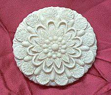

|
|
 SEE ALSO: Gode Cookery Table of Contents UPDATES: RECIPES & COOKERY: Recipes from A Newe Boke of Olde Cokery Incredible Foods, Solteties, & Entremets Glossary of Medieval Cooking Terms ARTICLES ON COOKERY: Regimen Sanitatis Salernitanum An Elizabethan Dinner Conversation Coqz Heaumez - A Helmeted Cock FEASTS & DINNERS: IMAGES: RESOURCES: Gode Cookery Selected Site of the Month Gode Cookery Awards and Site Reviews WEB NAVIGATION: The Medieval & Renaissance Cookery Webring RECIPES MAY BE FOUND IN: Recipes from A Newe Boke of Olde Cokery Incredible Foods, Solteties, & Entremets Coqz Heaumez - A Helmeted Cock
© 1997-2009 PLEASE VISIT: The Gode
Cookery Bookshop |
Grace before the Meal, by Anthonius Claessins, c. 1538-1613. Derived from The French Schoolmaster (1573),
A Citizen Family Dinner, with Guests Father - Wife, shall we go to dinner? Shall we dine? Wife - When it will please you, my lover, all is ready. The meat marreth; where have you tarried so long? You come not now from the church, that I know well, for it is twelve strucken. Father - Go to. Let us go to dinner. Let us sit. Wife - Go cause the folk to sit which are in the hall, and I go to the kitchen to cause to serve the board. Father - Make speed then, I pray you, for truly I am hungry. Masters, you be all welcome; I am sorry that I make you tarry so long. Guests - No force, sir, we do warm us in the meanwhile. Come near to the fire, come warm you. Father - Truly I am more hungry than a-cold. Go, let us wash hands... Page, call the children for to bless the board: ring the bell... Boy - What is your pleasure, mother? Wife - Where are you? Why went you not to meet your father and your uncle? I will tell your master: I will cause you to be beaten. Go quickly say grace, and take your sister by the hand. Take off your cap, and make curtsy. Boy - Well, mother, I go thither. You are welcome, father, and all your company. Father - Where have you been, wanton? One must always call and seek you when one should say grace. Pray unto God... After Grace, the Meal Begins Father - What, is not the children's table covered yet? What dost thou there, great lubber? Why goest thou not and serve the children? Servant - They be two or three about it, sir. Father - Who? Servant - Their lackey and their chamberlain. Master lackey, truly you shall be whipped today. You do lick here the dishes in the kitchen, and taste if the sauce is salted, and serve not your little master. Who hath drawn the lard out of these rabbits? Lackey - It is not I. Servant - You lie. Go your ways, you are lickerish. O Lord, he hath supped up all the broth of this mince pie! I would not be in thy skin for twenty crowns of gold... Father - William, give here some bread. Take a ladder, and see what wanteth on the board. You will never learn to serve, why do you not lead it with a trencher plate and not with the hand? I have told you above an hundred times; you learn nothing; it is a great shame. Hold, give this platter of porridge unto the children, and give them some spoons. Peter, take up my knife which is fallen under the table. Guest (to boy) - You do nothing but play the wanton little fellow. I will tell your father. Why do you not eat your porridge whilst they be hot? You are not hungry. Boy - They are yet too hot. I have burned my tongue and my lips. Guest - If they be too hot, blow them. Father - Are those your good manners to blow your porridge at the board? Where have you learned that - at your village? Wife - Husband, I pray you pull in pieces that capon, and help your neighbour: truly, he eateth nothing. Father - Tarry a little, wife. I have not yet tasted of these cabbages. Wife - You cannot eat of them, for they be too much peppered and salted. Father - Ah, what a pity is that! It is the meat that I love best, and it is marred. They say commonly in England that God sendeth us meat, and the Devil cooks. Wife - My lover, taste a little of these turnips... If you will eat of a good meat, eat of the leg of mutton stuffed with garlic. Father - Give me rather of that capon boiled with leeks, for I should smell of garlic three days after... Cut that turkeycock in pieces, but let it be cold, for it is better cold than hot. Sir, shall I be your carver?... Will you have this hen's wing? Guest - As for me, I love the white of the hen - and you love the rump. Father - You are a scoffer, as I perceive. Peter, fill me some wine. Peter - What wine shall it please you to drink? Father - It is all one to me. Give me claret wine; put water in it, for it is too strong to drink without water. Pour still. Hold up, it is enough... Mistress, shall I give you some crust of this pie? Wife - As it will please you; I am well, God be thanked. Father - Me thinketh it is too much baked. Wife - No, forsooth, but it is well; but it is a great pity that the liquor is so run out. Father - It is the fault of the baker. I would that he had it in his belly. Guest - I would be sorry of it truly, for I should lose... Father - Wife, have we nothing else? Wife - Yea, husband. Are the blackbirds roasted, the larks and the woodcock? Set here this partridge larded. Father - Cousin, if you will eat of a good morsel, cut some of these loins of the hare, dressed with a black sauce. Guest - Uncle, here is too much meat, methinketh we be at a wedding!... Father - Elizabeth, take all away; give us the fruit... Lay here those roasted pears, and the scraped cheese. Set those apples lower, they be pippins, as it seemeth to me. Did you ever see fairer pippins? Guest - I hold a penny that it cometh out of Normandy. Father - No, no, it is grown in England. These tarts be cold, and the egg pie also. Mistress, will you have some cake? Truly, it is but dough; I would the baker had been baked when he did heat the oven... Roland, shall we have a song? Roland - Yea, sir. Where be your books of music - for they be the best corrected? Father - They be in my chest. Katherine, take the key of the closet, you shall find them in a little till at the left hand. Behold, there be fair songs at four parts. Roland - Who shall sing with me? Father - You shall
have company enough: David shall
make the
base, John the tenor and James the treble. Begin...
Singing Follows, and Then Grace Guest - It is time to depart, for they have rung twice to evening prayers. Father - Have you so
great haste? Let us warm us
first, and
then we will go together.
Farewell
Source: Pritchard, R.E. Shakespeare's England. Life in
Elizabethan
& Jacobean Times.
Looking for something specific at Gode Cookery?
THE GODE COOKERY RING
Gourmet medieval &
Renaissance cookies from Gode
Cookery, perfect
for feasts, weddings, receptions, & more. In dozens of delightful
&
authentic designs.  http://www.godecookery.com/cookies/cookies.html
|


 An
Elizabethan
Dinner Conversation
An
Elizabethan
Dinner Conversation
 Gode Cookery
Gode Cookery